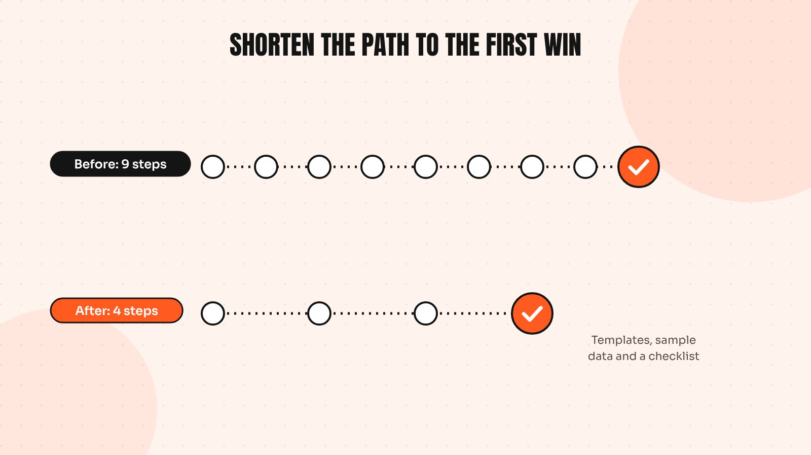

SaaS Onboarding: How to Get Users to Their First Win Faster
Users don’t sign up for your product. They sign up for a result. The faster they get their first win, the more likely they are to stay.

Here is an uncomfortable truth about SaaS: many people who sign up for a trial never really use the product. They create an account, look around, feel a bit lost and leave, planning to “come back later”. Most never do.
The fix isn’t more features or a longer tour. It’s helping each new user reach their first win as quickly as possible. That first win is the moment someone thinks, “Oh, this actually works for me.”

Step 1: Define your first win
Every product has a different first win. For an invoicing tool, it might be sending the first invoice. For a form builder, publishing a form and getting the first response. For an analytics product, seeing your own data in a chart.
Write it down as one sentence: “A new user has succeeded when they ___.” Then measure how many users reach it and how long it takes. Activation rate and time to value are the two numbers that matter most here.
Step 2: Cut everything between sign-up and the win
Map every step from the sign-up page to the first win. Then question each one:
- Do we need this information now or can we ask later?
- Can we fill this in for them, from their email domain or a template?
- Can they skip this step and come back to it?
- Does this screen help them reach the win or just explain our features?
Most products can remove or delay a third of their onboarding steps without losing anything important. Every removed step means more people reach the win.
Step 3: Use templates and sample data
Blank screens are hard. A new user staring at an empty project doesn’t know where to start. Templates, sample data and pre-filled examples give them something to react to and edit, which is much easier than creating from nothing.
Step 4: Guide with a short checklist, not a long tour
Product tours that point at every button are usually skipped. Nielsen Norman Group’s research on onboarding suggests that most products are better served by a clear interface than by long tutorials. A short checklist of three to five tasks works better, because it lets people learn by doing and shows progress.
- Create your first project
- Invite a teammate
- Connect your data
- Share your first result
Each item should take a minute or two and the last one should be the first win. Celebrate it when it happens, with a short message and a clear next step.

Step 5: Follow up where users drop off
Your analytics will show where new users stop. Use that to trigger helpful nudges: an in-app hint when someone has been stuck on a step or an email that links straight back to the unfinished task. Keep these messages specific. “Your form is ready to publish” works far better than “We miss you”.
Signs your onboarding needs work
- A large share of sign-ups never return after day one
- Support gets the same setup questions every week
- Trials expire before users finish setup
- Sales calls spend most of their time on basic navigation
If your dashboard is the first thing users see, its empty state matters too. My guide to the signs your dashboard is confusing users covers that and for mobile products see mobile app onboarding UX.
Send me your screens and I’ll show you where users drop off and what to fix first.
Quick answers
What is time to value in SaaS?
Time to value is how long it takes a new user to get their first meaningful result from your product, such as sending a first invoice or seeing their own data. Shorter time to value usually leads to better trial conversion and retention.
What is a good SaaS onboarding flow?
A good flow asks only for essential information, uses templates or sample data, guides users with a short task checklist and leads directly to the first win, then follows up where people tend to drop off.
Are product tours good for SaaS onboarding?
Long tours that point at every feature are often skipped. Short, contextual hints and a checklist of real tasks usually work better because users learn by doing.